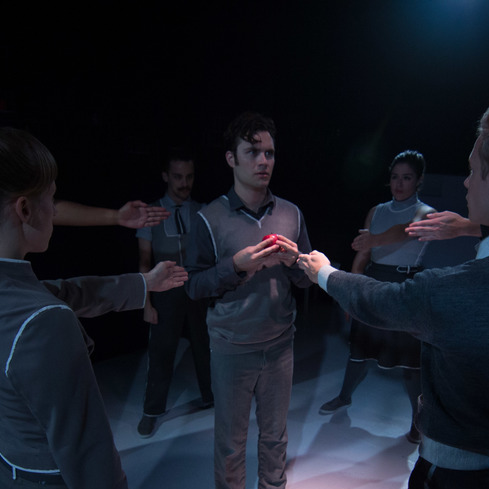
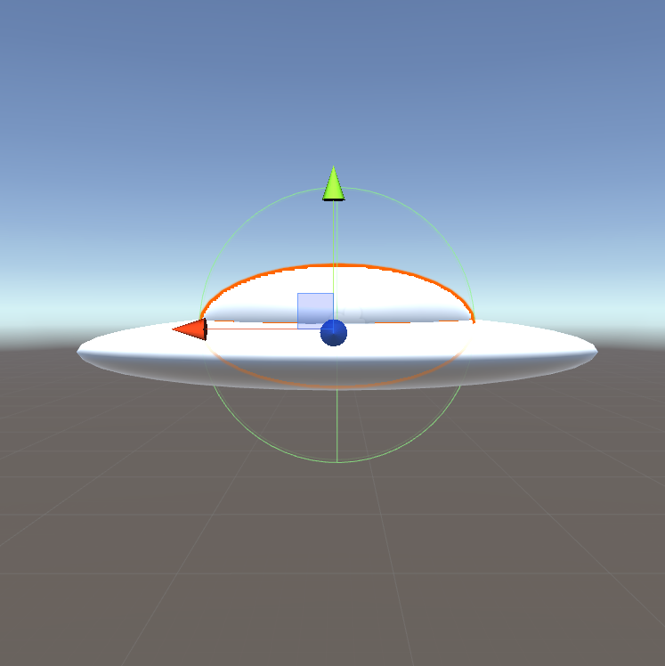
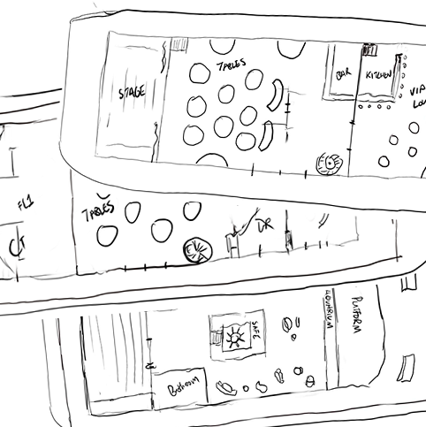

Projects
While my professional focus is on marketing, I have dabbled in creative projects and hobbies over the years. Some of these are smaller projects that I did for fun, and some of which are bigger endeavors that I'm actually quite proud of. This page is dedicated to hosting and sharing these ideas.
Theatrical Producing
As a theatre major at Northwestern University, I discovered the wonderful world of theatrical producing. After joining a few production teams in my freshman year, I wanted to learn more about the business side of entertainment, and pursued opportunities to learn more. I worked on engaging plays for young audiences, epic musicals and even a sprawling immersive outdoor stunt show. I loved producing because it brought me even closer to properties that I love than I thought possible - I could help achieve an incredible design idea, or find a way to communicate the unique vision for a show with our target audiences.
After graduating Northwestern, I continued producing a few one-off projects under the company name Feast Productions. As my career in marketing continued, Feast became inactive, but I'm incredibly proud to have been part of making a few wonderful theatrical visions a reality.
Game Development
I have always loved video games. A few years ago I was inspired to learn more about how they are made, and to start practicing using some of these tools myself. I took an Intro to Unity course and developed a prototype for a UFO Abduction game that I want to finish some day!
You can learn more about my experience in the class and check out my project here.
Tabletop Roleplaying
I discovered this glorious game in my early twenties. It harnesses the imagination and the spirit of play in a way that no other experience I've had can come close to. After a few years playing in one-off sessions or at drop-in experiences at gaming stores in Brooklyn, I decided I wanted to learn how to be a dungeon master, or DM.
DMing is some of the most fun I've had playing a game in my entire life. Part of the thrill comes from the fact that it's also one of the more challenging creative and organizational tasks I've assigned myself. In any one session I have to be on top of rules, story beats, character backgrounds as well as being highly socially and emotionally tuned in to what my players are attempting to do during the session.
For my two most recent campaigns, I've been maintaining an Adventure Log in Google Slides, so that the players (and me) can be reminded of what has occurred in previous sessions. You can view the Adventure Log for my D&D Campaign here, and my log for my Star Wars RPG campaign here.